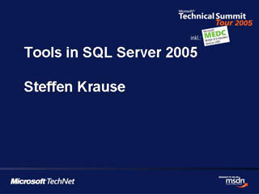
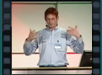

Überblick über Architektur und Tools in SQL Server 2005

Speaker(s): Steffen Krause, Dariusz Parys
Neues in und zu Windows Mobile
Speaker(s): Frank Prengel, Dirk Primbs
Hochverfügbarkeit und Skalierbarkeit mit dem neuen SQL Server
Speaker(s): Steffen Krause, Ralph Kemperdick
SQL Server 2005 Programmability
 Speaker(s): Dariuzs Parys, Peter Koen
Speaker(s): Dariuzs Parys, Peter Koen
Geräte unter Kontrolle: Verwaltung und Deployment mit dem SMS 2003 Device Management Feature Pack
Speaker(s): Martin Santospirito
Sicheres und einfaches Deployment mit ClickOnce
Speaker(s): Jens Haeupel, Daniel Melanchthon
Business Intelligence in SQL Server 2005
Speaker(s): Steffen Krause, Ralph Kemperdick
Daten Mobil: SQL Server 2005 Mobile Edition

Speaker(s): Dirk Primbs